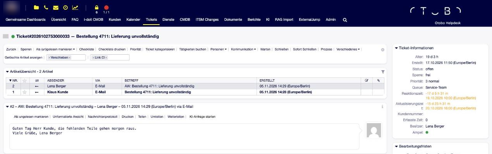
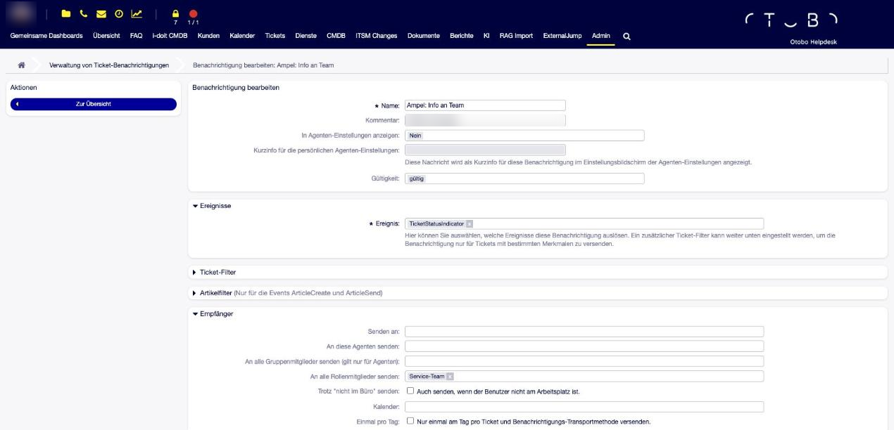
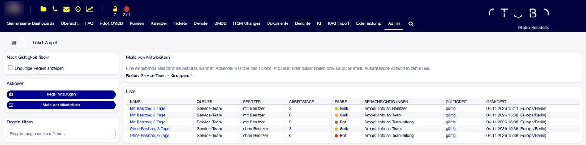
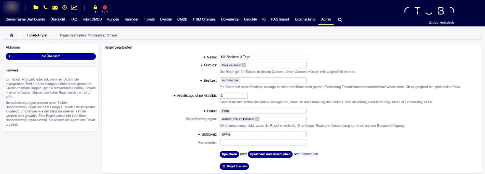
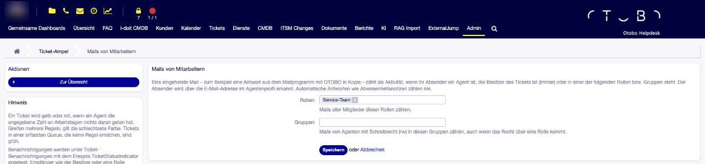
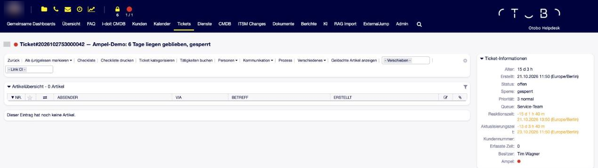
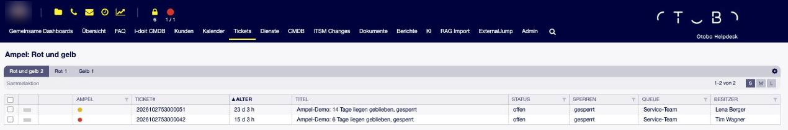

OTOBO Ticket-Ampel¶
Beschreibung¶
Die Ticket-Ampel zeigt an jedem Ticket, ob sich jemand darum kümmert: grün, solange zuletzt ein Agent daran gearbeitet hat, gelb, wenn es seit einigen Arbeitstagen liegt, und rot, wenn es zu lange liegt. Liegengebliebene Tickets fallen damit sofort auf — als farbiger Punkt in allen Ticketlisten, im Ticket neben dem Titel und in der Toolbar mit der Zahl der roten und gelben Tickets. Erreicht ein Ticket eine Stufe, benachrichtigt die Ampel auf Wunsch den Besitzer, das Team oder die Teamleitung.
Gezählt wird echte Bearbeitung: eine Notiz, eine Antwort, eine Statusänderung. Nachfragen des Kunden, Antworten aus dem Kundenportal und Automatik setzen die Ampel nicht zurück — sonst stünde ein Ticket schon auf Grün, nur weil der Kunde alle zwei Tage nachfragt. Wer aus dem Mailprogramm antwortet und OTOBO in Kopie setzt, gilt dagegen als Bearbeiter: Die Mail des Ticket-Besitzers zählt immer, die des Teams nach Auswahl von Rollen oder Gruppen.
Wann ein Ticket gelb oder rot wird und wer dann Bescheid bekommt, steht in Regeln, die der Administrator in einer eigenen Maske pflegt.
Auf einen Blick
Ampel grün / gelb / rot an jedem Ticket der erfassten Queues — in Ticketlisten, im Ticket und in der Toolbar
Regeln je Queue und Besitzer, in Arbeitstagen mit Kalender und Feiertagen
Benachrichtigungen sind normale OTOBO-Ticketbenachrichtigungen; jede Regel benachrichtigt nur einmal pro Liegezeit
Nur echte Bearbeitung durch Agenten zählt — auch Antworten aus dem Mailprogramm mit OTOBO in Kopie, Abwesenheitsnotizen nie
Eigene Übersicht der roten und gelben Tickets; die Ampel ist filter- und suchbar
Ein Tooltip am Ampelpunkt erklärt, warum ein Ticket seine Farbe hat
Kein Core-Override, keine Änderung an bestehenden Masken
Einsatzszenarien¶
Reaktionszeiten ohne SLA. Ein Service-Team will Tickets nicht liegen lassen, hat aber keine vertraglichen Fristen. Tickets ohne Besitzer werden nach drei Arbeitstagen gelb und das Team bekommt eine Mail; nach sechs Arbeitstagen werden sie rot und die Teamleitung erfährt es.
Teamleitung behält den Überblick. Statt Suchen zu bauen, sieht die Teamleitung in der Toolbar, wie viele Tickets rot und gelb sind, und öffnet mit einem Klick die Liste.
Besitzer erinnern. Ein Ticket mit Besitzer meldet sich zuerst bei seinem Besitzer, erst später beim Team und zuletzt bei der Teamleitung.
Arbeiten aus dem Mailprogramm. Ein Team beantwortet Kundenanfragen aus Outlook und setzt OTOBO in Kopie. Die Antworten des Teams halten die Ampel grün; fragt der Kunde nach, ändert das nichts.
Systemvoraussetzungen¶
Framework¶
OTOBO 11.0.x oder 10.1.x
Weitere Voraussetzungen¶
Ein laufender OTOBO-Daemon — er bemerkt, dass Zeit vergangen ist
Keine weiteren Pakete
So funktioniert die Ampel¶
Agent arbeitet am Ticket ──► Ampel wird sofort neu berechnet (meist: grün)
│
Daemon, alle 10 Minuten ──► alle Tickets der erfassten Queues
▼
Arbeitstage seit der letzten Bearbeitung (oder Erstellung)
│
Regeln der Queue des Tickets, Bedingung „Besitzer“
│
erreichte Regeln ──► schlechteste Farbe in das Feld „Ampel“
└─► Benachrichtigungen neu erreichter Regeln (einmal je Liegezeit)
Was als Bearbeitung zählt¶
Als Bearbeitung zählt, was ein Agent in OTOBO am Ticket tut: eine Notiz, eine Antwort, ein Telefonat, eine Weiterleitung, eine Änderung an Status, Priorität, Queue, Besitzer, Verantwortlichem, Titel, Typ, Service, SLA, Kunde oder einem dynamischen Feld, eine Wartezeit. Welche Einträge der Ticket-Historie das sind, legt eine Einstellung fest.
Nicht als Bearbeitung zählen eingehende Kundenmails, Antworten aus dem Kundenportal und alles, was OTOBO selbst erledigt — etwa ein Generic Agent. Auch Sperren und Entsperren eines Tickets zählen nicht. Übergibt ein Agent ein Ticket an einen anderen Agenten, ist das dagegen Bearbeitung.
Hat noch nie jemand an einem Ticket gearbeitet, zählt seine Erstellung.
Mails von Mitarbeitern¶
Viele Teams antworten aus ihrem Mailprogramm und setzen OTOBO in Kopie. Die Antwort kommt dann als eingehende Mail ins Ticket — genau wie eine Kundenmail. Damit sie trotzdem als Bearbeitung zählt, prüft die Ampel bei jeder eingehenden Mail den Absender:
Ist er der Besitzer des Tickets, zählt die Mail immer.
Ist er Mitglied einer der unter Mails von Mitarbeitern gewählten Rollen oder hat er Schreibrecht (rw) in einer der gewählten Gruppen — auch über eine Rolle —, zählt sie ebenfalls.
Automatische Antworten wie Abwesenheitsnotizen zählen nie.
Erkannt wird der Absender an der E-Mail-Adresse im Agentenprofil. Ob dieselbe Person im Ticket auch als Kunde eingetragen ist, spielt keine Rolle — entscheidend ist, wer die Mail geschickt hat.


Abb. 1 Der Kunde fragt nach, die Besitzerin antwortet aus dem Mailprogramm mit OTOBO in Kopie. Die Antwort landet als E-Mail-Artikel im Ticket, und die Ampel steht auf Grün.¶
Arbeitstage¶
Ein Arbeitstag ist ein Tag, an dem der Kalender Geschäftszeiten hat und der kein Feiertag ist. Ein Arbeitstag ist vergangen, wenn am nächsten Arbeitstag dieselbe Uhrzeit erreicht ist: Eine Bearbeitung am Montag um 14:00 ist am Donnerstag um 14:00 drei Arbeitstage alt, eine am Freitag um 14:00 am Mittwoch um 14:00. Wahlweise zählt die Ampel einfache Kalendertage zu 24 Stunden.
Welcher Kalender gilt, steht in einer Einstellung; ohne sie gilt der Kalender der Queue des Tickets, sonst der Standardkalender. Arbeitstage, Zeitzone und Feiertage kommen alle aus diesem Kalender (siehe Kalender und Feiertage).
Mit und ohne Besitzer¶
In OTOBO hat jedes Ticket einen Besitzer. Tickets, um die sich niemand kümmert, gehören einem
Platzhalter — standardmäßig root@localhost, dem OTOBO ein Ticket auch beim Entsperren
zurückgibt, wenn das so eingestellt ist. Für die Regeln gilt deshalb:
ohne Besitzer — das Ticket gehört einem Platzhalter (Einstellung, Standard
root@localhost),mit Besitzer — das Ticket gehört einem anderen Agenten, egal ob gesperrt oder nicht.
Parkt Ihr Team Tickets bei einem eigenen Platzhalter-Agenten, etwa „Nicht zugewiesen“, tragen Sie dessen Login in derselben Einstellung ein.
Tickets ohne Ampel¶
Tickets in Queues, die keine Regel erfasst, haben keine Farbe. Ebenso Tickets in den Status warten zur Erinnerung, geschlossen, zusammengefasst und entfernt — sie senden auch nichts.
Wann neu berechnet wird¶
Gleich nach jeder Änderung am Ticket und alle 10 Minuten für alle Tickets über den Daemon. Dass Zeit vergangen ist, bemerkt nur der Daemon — ein Ticket wird also bis zu 10 Minuten nach Ablauf der Frist gelb.
Benachrichtigungen¶
Benachrichtigungen sind ganz normale OTOBO-Ticketbenachrichtigungen mit dem Ereignis
TicketStatusIndicator. Empfänger (Besitzer, Agenten, Rollen, Gruppen), Texte, Bedingungen
und Versandwege werden dort wie gewohnt gepflegt. OTOBO selbst löst dieses Ereignis nie aus —
nur die Ampel, und nur für die Benachrichtigungen, die eine Regel nennt.
Jede Regel benachrichtigt einmal pro Liegezeit: Ist sie für ein Ticket erreicht, merkt sich die Ampel das, bis wieder ein Agent am Ticket arbeitet. Danach darf jede Regel erneut melden. Hat ein Ticket zwischendurch keine Farbe — es liegt in einer anderen Queue oder wartet —, bleibt der Merker stehen; kehrt es ohne Bearbeitung zurück, meldet es sich nicht noch einmal.
Für die Mails der gelben Regeln bringt die Ampel eine eigene E-Mail-Vorlage Warning mit: die OTOBO-Vorlage Alert mit gelbem statt rotem Banner und der Überschrift Warnung. So passt die Mail zur Farbe der Ampel. Ausgewählt wird sie in der Benachrichtigung unter Benachrichtigungsmethoden › E-Mail; die Benachrichtigungen der roten Regeln behalten Alert.


Abb. 2 Eine Benachrichtigung der Ampel: Ereignis TicketStatusIndicator, Empfänger wie gewohnt —
hier alle Mitglieder der Rolle Service-Team.¶
Installation und Einrichtung¶
Paket über Admin › Paketverwaltung installieren. Es legt das dynamische Feld Ampel an und blendet es in den Ticketlisten, im Ticket und in der Ticketsuche ein.
Den Kalender prüfen: Geschäftszeiten, Zeitzone und Feiertage (siehe Kalender und Feiertage).
Unter Admin › Ticket-Benachrichtigungen die Benachrichtigungen mit dem Ereignis TicketStatusIndicator anlegen — eine je Empfängerkreis, zum Beispiel an den Besitzer, an das Team, an die Teamleitung. Für die gelben Regeln als E-Mail-Vorlage Warning wählen, für die roten Alert.
Unter Admin › Ticket-Ampel die Regeln anlegen.
Bis zu 10 Minuten warten — dann haben alle Tickets ihre Farbe.
Wichtig
Der erste Lauf einer neuen Regel. Eine neue Regel greift sofort bei allen Tickets, die schon lange genug liegen — und jedes davon schickt einmal ihre Benachrichtigungen. Soll das nicht passieren, die Regel zuerst ohne Benachrichtigungen speichern, einen Lauf abwarten und die Benachrichtigungen erst dann zuweisen. Die schon erreichten Tickets gelten dann als gemeldet; benachrichtigt werden nur noch Tickets, die die Regel neu erreichen.
Wer eine Regel löscht und neu anlegt, löst diese Welle erneut aus; eine ungültig gesetzte Regel behält ihr Gedächtnis.
Admin-Handbuch¶
Regeln verwalten¶
Admin › Ticket-Ampel (Bereich Automatisierung) zeigt alle Regeln mit Queues, Besitzer, Arbeitstagen, Farbe, Benachrichtigungen und Gültigkeit — mit Filter und einem Schalter für ungültige Regeln. Darüber steht, wessen Mails als Bearbeitung zählen.


Abb. 3 Die Regeln eines Service-Teams; darüber der Kasten Mails von Mitarbeitern.¶
Treffen mehrere Regeln auf ein Ticket zu, gilt die schlechteste Farbe.
Eine Regel anlegen¶
Über Regel hinzufügen. Eine Regel sagt:
Tickets in diesen Queues, mit / ohne / mit oder ohne Besitzer, an denen seit N Arbeitstagen kein Agent gearbeitet hat, werden gelb / rot und bekommen diese Benachrichtigungen.


Abb. 4 Eine Regel: Queues, Besitzer, Arbeitstage, Farbe und Benachrichtigungen.¶
- Queues
Die Regel gilt für Tickets in diesen Queues. Unter-Queues müssen mit ausgewählt werden.
- Besitzer
ohne Besitzer, mit Besitzer oder mit oder ohne Besitzer — siehe Mit und ohne Besitzer.
- Arbeitstage ohne Aktivität
Eine ganze Zahl von 1 bis 250.
- Farbe
Gelb oder Rot.
- Benachrichtigungen
Angeboten werden nur gültige Ticketbenachrichtigungen mit dem Ereignis
TicketStatusIndicator.- Regel löschen
Entfernt die Regel samt ihrem Gedächtnis, welche Tickets schon benachrichtigt wurden. Ungültig setzen behält es.
Mails von Mitarbeitern einstellen¶
Über Mails von Mitarbeitern links unter Aktionen wählen Sie in zwei Mehrfachauswahlen die Rollen und Gruppen, deren Mitglieder als Team gelten. Die Mail des Ticket-Besitzers zählt ohnehin immer; sind beide Felder leer, zählt nur sie.


Abb. 5 Mails der Mitglieder der Rolle Service-Team zählen als Bearbeitung.¶
Tipp
Wählen Sie nur das Team, das die Tickets bearbeitet — keine allgemeinen Gruppen wie users. Sonst setzt jede Mail eines beliebigen Kollegen die Ampel zurück.
Die Auswahl wirkt auch auf Mails, die schon im Ticket liegen: Hat das Team seit der letzten Bearbeitung bereits per Mail geantwortet, wird das Ticket beim nächsten Lauf grün. Benachrichtigungen löst das nicht aus.
Anwender-Handbuch¶
Die Ampel im Ticket und in Listen¶
Die Farbe erscheint als Punkt ohne Text in den Ticketlisten (Queue-Ansicht, Status-Ansicht, Suchergebnisse …) und im Ticket — dort in den Ticket-Informationen und vor Ticketnummer und Titel.


Abb. 6 Der Ampelpunkt vor Ticketnummer und Titel und noch einmal in den Ticket-Informationen.¶
Warum hat ein Ticket seine Farbe?¶
Fährt man mit der Maus über den Punkt, nennt der Tooltip die Farbe und den Grund, zum Beispiel:
Ampel: Rot
Letzte Aktivität eines Agenten: 23.10.2026 14:00, vor 7 Arbeitstagen
Ohne Besitzer
Erreichte Regeln:
• Ohne Besitzer, 3 Tage
• Ohne Besitzer, 6 Tage
Hat zuletzt eine Mail aus dem Team gezählt, steht dort „Letzte Aktivität: Mail von …“ mit dem Namen des Absenders. Die Zahl der Tage endet bei der größten Regel; sehr alte Tickets zeigen „vor mindestens 9 Arbeitstagen“.
Übersicht und Toolbar¶
In der Toolbar zeigt ein Punkt die schlechteste Farbe unter den Tickets, die Sie sehen dürfen, dazu die Zahl der roten und gelben Tickets. Ein Klick öffnet die Übersicht mit den Reitern Rot und gelb, Rot und Gelb.


Abb. 7 Die Übersicht der roten und gelben Tickets; oben in der Toolbar „1 / 1“ (rot / gelb).¶
Die Ampel ist ein gewöhnliches dynamisches Feld: Ticketlisten lassen sich danach filtern, die Ticketsuche kann danach suchen, Exporte zeigen den Namen der Farbe.
Bemerkung
Die Ampel nicht von Hand setzen und nicht in Bearbeitungsmasken einblenden. Sie wird aus der Zeit berechnet; der nächste Lauf überschreibt jeden von Hand gesetzten Wert, und eine Benachrichtigung löst das Setzen nicht aus.
Beispiel¶
Ein Service-Team mit Teamleitung, alle Regeln auf den Queues des Teams:
Regel |
Besitzer |
Arbeitstage |
Farbe |
Benachrichtigung |
|---|---|---|---|---|
Ohne Besitzer, 3 Tage |
ohne |
3 |
gelb |
an das Team |
Ohne Besitzer, 6 Tage |
ohne |
6 |
rot |
an die Teamleitung |
Mit Besitzer, 3 Tage |
mit |
3 |
gelb |
an den Besitzer |
Mit Besitzer, 6 Tage |
mit |
6 |
gelb |
an das Team |
Mit Besitzer, 9 Tage |
mit |
9 |
rot |
an die Teamleitung |
Kalender Montag bis Freitag. Eine Kundenmail legt am Montag um 10:00 ein freies Ticket an:
Wann |
Was passiert |
Farbe |
Benachrichtigt |
|---|---|---|---|
Mo 10:00 |
Ticket angelegt |
grün |
– |
Mi 09:00 |
Der Kunde schreibt erneut — keine Bearbeitung |
grün |
– |
Do 10:00 |
3 Arbeitstage |
gelb |
Team |
Fr 08:00 |
Ein Agent sperrt das Ticket und wird so Besitzer — keine Bearbeitung, aber jetzt „mit Besitzer“ |
gelb |
Besitzer |
Di 10:00 |
6 Arbeitstage (mit Besitzer) |
gelb |
Team |
Mi 11:00 |
Der Agent schreibt eine Notiz |
grün |
– (Gedächtnis gelöscht) |
Mo 11:00 |
3 Arbeitstage seit der Notiz |
gelb |
Besitzer |
Mo 11:30 |
Der Agent setzt „warten zur Erinnerung“ |
keine |
– |
Einstellungen¶
Alle Einstellungen stehen in der Systemkonfiguration; Suchbegriff TicketStatusIndicator.
TicketStatusIndicator###ActivityHistoryTypesEinträge der Ticket-Historie, die als Bearbeitung zählen, wenn ein echter Agent sie schreibt. Standard: NewTicket, AddNote, SendAnswer, EmailAgent, PhoneCallAgent, PhoneCallCustomer, Forward, Bounce, StateUpdate, PriorityUpdate, Move, OwnerUpdate, ResponsibleUpdate, TitleUpdate, TypeUpdate, ServiceUpdate, SLAUpdate, CustomerUpdate, SetPendingTime, TicketDynamicFieldUpdate. Sperren und Entsperren fehlen absichtlich.
TicketStatusIndicator###NoOwnerUsersLogins der Agenten, die für „kein Besitzer“ stehen. Standard:
root@localhost.TicketStatusIndicator###MailActivityRolesRollen, deren Mitglieder als Absender von Bearbeitungsmails gelten — neben dem Besitzer. Gepflegt unter Admin › Ticket-Ampel › Mails von Mitarbeitern. Standard: leer.
TicketStatusIndicator###MailActivityGroupsGruppen, deren Mitglieder mit Schreibrecht (auch über eine Rolle) als Absender von Bearbeitungsmails gelten. Gepflegt in derselben Maske. Standard: leer.
TicketStatusIndicator###MailActivityHistoryTypesEinträge der Ticket-Historie für eingehende Mails, deren Absender geprüft wird. Standard: FollowUp, EmailCustomer.
TicketStatusIndicator###ExcludedStateTypesStatustypen ohne Ampel. Standard: warten zur Erinnerung, geschlossen, zusammengefasst, entfernt.
TicketStatusIndicator###CountWorkingDaysArbeitstage des Kalenders zählen. Aus: Kalendertage zu 24 Stunden. Standard: an.
TicketStatusIndicator###CalendarKalendernummer 1–9. Leer: Kalender der Queue, sonst der Standardkalender.
Ticket::EventModulePost###9992-TicketStatusIndicatorBerechnet ein Ticket gleich nach einer Änderung neu. Ohne diese Einstellung folgt die Ampel nur dem Daemon.
Daemon::SchedulerCronTaskManager::Task###TicketStatusIndicatorUpdateBerechnet alle erfassten Tickets neu und versendet die Benachrichtigungen. Standard: alle 10 Minuten.
Frontend::Output::FilterElementPost###TicketStatusIndicatorSetzt den Punkt vor Ticketnummer und Titel im Ticket. Ungültig setzen entfernt ihn dort.
Frontend::ToolBarModule###195-Ticket::TicketStatusIndicatorDer Toolbar-Eintrag. Er erscheint nur bei Agenten, die mindestens eine erfasste Queue sehen dürfen. Mit einem zusätzlichen Schlüssel
Group(etwarw:support) lässt er sich weiter einschränken; ungültig setzen entfernt ihn.Ticket::Frontend::AgentTicketStatusIndicatorView###DefaultColumnsSpalten der Übersicht der roten und gelben Tickets; Agenten können sie in der Liste ändern.
Bei der Installation ergänzt das Paket außerdem — nur, wenn es noch fehlt — das Ereignis
TicketStatusIndicator für Ticketbenachrichtigungen und das Feld Ampel in den kleinen
Ticketlisten, im Ticket und in der Ticketsuche. Wer das Feld dort wieder ausblendet, behält
das auch nach Updates.
Kalender und Feiertage¶
Für den Kalender <n> (ohne Zusatz für den Standardkalender):
TimeWorkingHours::Calendar<n>Ein Wochentag mit mindestens einer Geschäftsstunde ist ein Arbeitstag.
TimeZone::Calendar<n>Zeitzone, in der die Tage gezählt werden, zum Beispiel
Europe/Berlin. Fehlt sie, zählt die Ampel in der OTOBO-Zeitzone (oft UTC), und ein Tag kann ein bis zwei Stunden zu früh wechseln.TimeVacationDays::Calendar<n>Feiertage mit festem Datum.
TimeVacationDaysOneTime::Calendar<n>Bewegliche Feiertage (Ostern, Himmelfahrt, Pfingsten). OTOBO berechnet sie nicht; sie werden je Jahr eingetragen. Regionale Feiertage hängen vom Standort ab.
Fehlersuche¶
- Keine Farben
Es gibt keine gültige Regel, das Feld Ampel ist ungültig, oder der Daemon läuft nicht.
- Ein Ticket wird gelb, obwohl der Kunde gestern geschrieben hat
So gewollt: Nur Bearbeitung durch Agenten zählt; eine Kundenmail setzt die Ampel weder zurück noch hält sie sie auf.
- Ein Ticket wird gelb, obwohl ein Kollege per Mail geantwortet hat
Der Absender ist weder Besitzer noch Mitglied einer Rolle oder Gruppe unter Mails von Mitarbeitern; die Mail kam aus einem Sammelpostfach, über eine Aliasadresse oder „im Auftrag von“, sodass die Absenderadresse nicht der im Agentenprofil entspricht; oder es war eine automatische Antwort. Der Tooltip zeigt, was zuletzt gezählt hat.
- Ein Ticket bleibt grün, obwohl nichts passiert ist
Ein Agent hat etwas geändert, das als Bearbeitung zählt (etwa ein dynamisches Feld), eine Mail aus dem Team kam an, oder das Ticket ist neu in der Queue. Die Ticket-Historie und der Tooltip zeigen den letzten Eintrag.
- Die Farbe wechselt ein bis zwei Stunden zu früh oder zu spät
Die Zeitzone des Kalenders ist nicht gesetzt.
- Die Tage laufen über Ostern oder Weihnachten weiter
Der Feiertag fehlt im Kalender.
- Eine Benachrichtigung wird in der Regel nicht angeboten
Sie ist ungültig oder nicht für das Ereignis
TicketStatusIndicatoreingerichtet.- Eine Benachrichtigung kam für dieselbe Liegezeit zweimal
Zwei Regeln nennen dieselbe Benachrichtigung — jede Regel sendet ihre eigene.
- Viele Benachrichtigungen auf einmal nach dem Anlegen einer Regel
Der erste Lauf: Alle Tickets, die schon lange genug liegen, erreichen die Regel gemeinsam. Das passiert einmal — siehe den Hinweis unter Installation und Einrichtung.
- Die Ampel von Hand zu setzen, löst keine Benachrichtigung aus
So gewollt: Benachrichtigungen folgen der Zeit seit der letzten Bearbeitung, nicht dem Feld. Der nächste Lauf schreibt die berechnete Farbe zurück.
- Viele gleiche Benachrichtigungsartikel in einem Ticket (bis Version 11.0.2)
Die Benachrichtigung hatte eine zusätzliche Empfänger-E-Mail-Adresse und hat sich darüber immer wieder selbst ausgelöst. Ab 11.0.3 behoben. Nach dem Update entfernt der Befehl
Maint::TicketStatusIndicator::ArticleCleanup --since <Datum>die überzähligen Artikel — zuerst nur als Liste, mit--deleteendgültig. Vorher eine Datenbanksicherung machen.
Worauf achten¶
Die Ampel betrachtet nur die Bearbeitung durch Agenten, nicht Kundennachrichten oder SLAs. Sie ist unabhängig von der OTOBO-Eskalation.
Mails von Mitarbeitern werden nur an der Absenderadresse erkannt. Die Adresse im Agentenprofil muss die sein, mit der gesendet wird.
Dass Zeit vergangen ist, bemerkt der Daemon alle 10 Minuten.
Eine Regel braucht mindestens eine Queue; „alle Queues“ gibt es nicht.
Jeder Farbwechsel ist eine Änderung am Ticket durch den System-Benutzer: Er setzt die Änderungszeit und schreibt einen Historien-Eintrag. Statistiken oder Generic-Agent-Jobs, die auf die Änderungszeit schauen, sehen auch diese Änderungen; die Ampel selbst zählt sie nicht als Bearbeitung.
Eine Regel wartet höchstens 250 Arbeitstage.
Die Werte des Feldes sind fest (grün, gelb, rot).
Beim Deinstallieren werden das Feld mit allen Werten, das Ereignis und die Regeln entfernt.
Seit Version 11.0.4 zählt für „mit Besitzer“ der Besitzer, nicht die Sperre. Beim Update von einer älteren Version wechseln freie Tickets, die einem Agenten gehören, in die Regeln „mit Besitzer“ und melden sich dort einmal. Wer das vermeiden will, nimmt die Benachrichtigungen für einen Lauf von den Regeln.